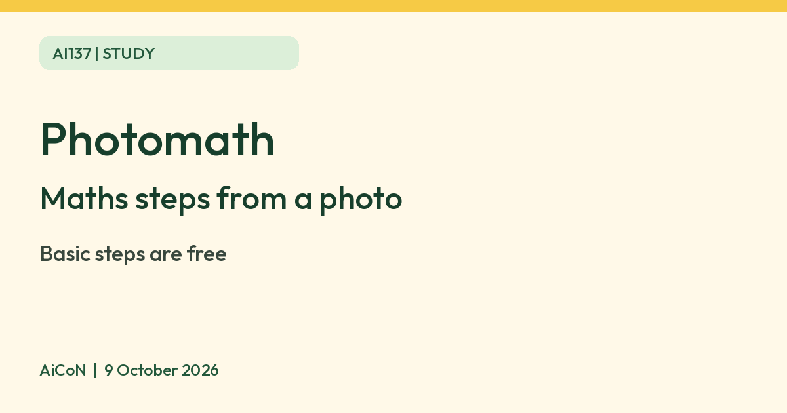

Photomath: scan a maths problem and see the steps, free
Photomath is a phone app that shows step-by-step maths explanations from a photo. Basic steps are free, per Photomath.

What it is
Photomath is a phone app for maths homework. You point the camera at a problem, and it shows the solution with step-by-step explanations. Photomath says it uses both AI and maths experts, and covers topics from arithmetic to calculus, geometry and word problems.
Is it free
Partly. Photomath says you can download the app and see basic step-by-step explanations at no charge. Extra features, such as Animated Tutorials, need Photomath Plus, its paid version. Plus is billed through Google Play or the App Store, and its price is not quoted here.
How to start
- Install Photomath from Google Play or the App Store.
- Scan the problem. Drag the corners of the viewfinder so the whole problem fits.
- If the scan is wrong, tap the pencil to edit the equation.
- Tap Show Solving Steps to see each step.
Limits to know
- Photomath says some problems it cannot solve yet. Check each answer and step yourself.
- It is a learning aid. Use the steps to understand the method, and follow your school's rules on tools.
- The terms allow use only from age 13. Minors need a parent or legal guardian’s permission.
- Animated Tutorials and deeper explanations are Plus features.
- We did not test the app ourselves.
Frequently asked questions
Does it need a subscription?
Not for basic step-by-step explanations, per Photomath. Plus is optional.
Can it read word problems?
Photomath says it covers word problems. Its guide describes editing the recognised equation if a scan is wrong; it does not promise that every word problem can be solved.
Sources: Photomath, Photomath 101, Photomath terms. Checked 9 October 2026.